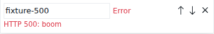
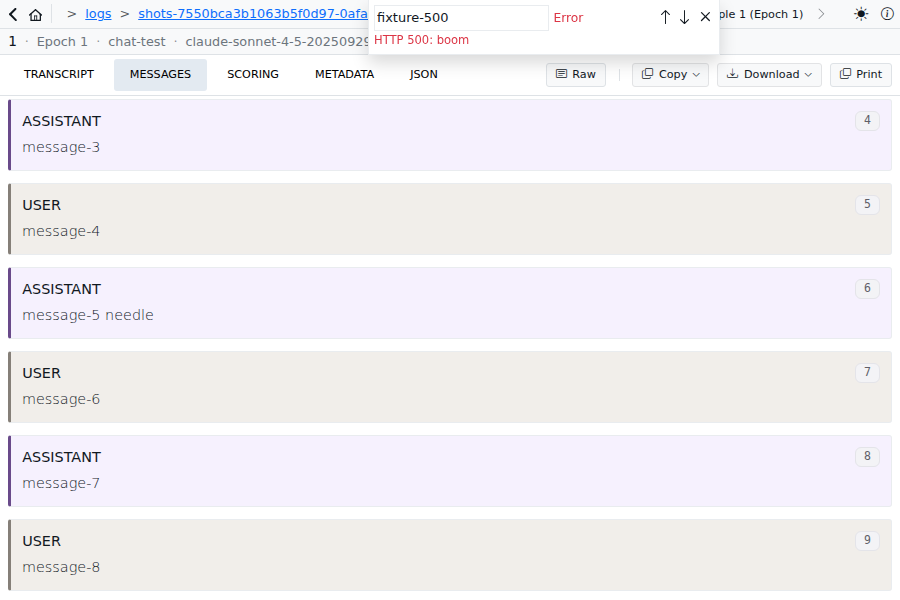
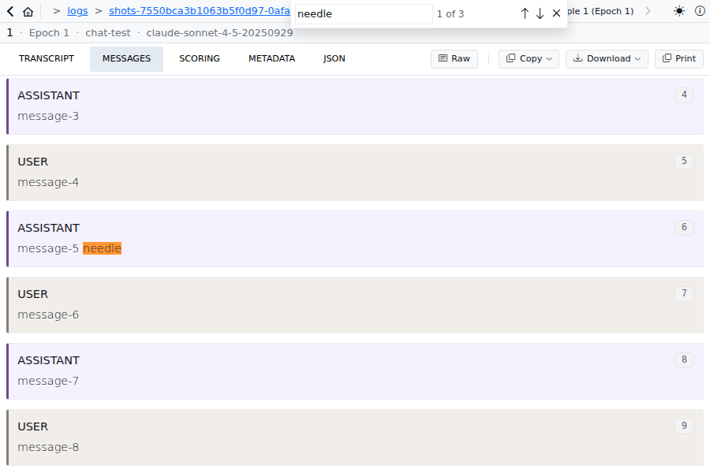
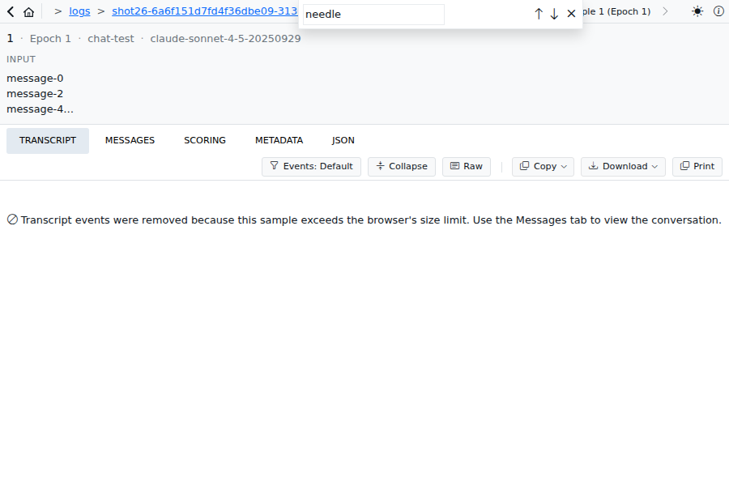
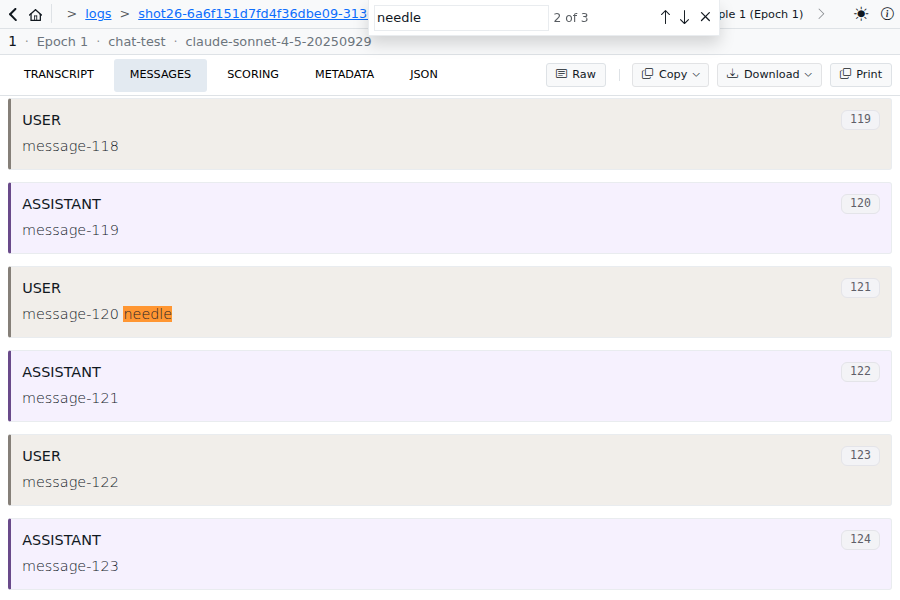
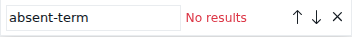
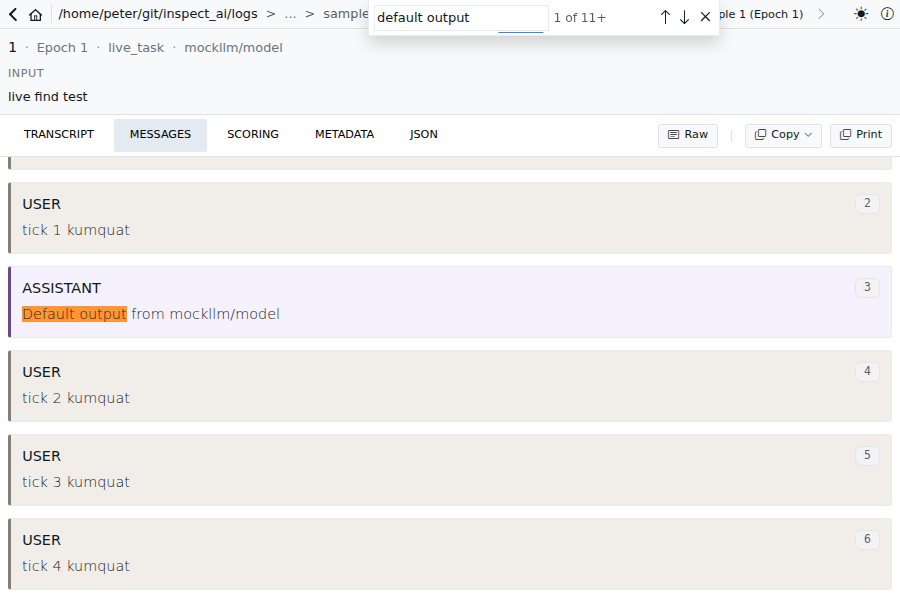
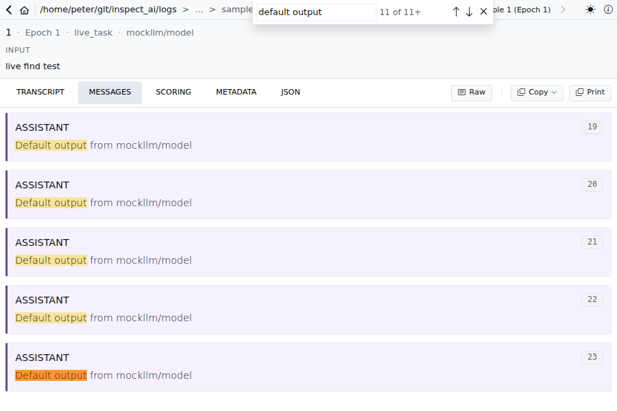
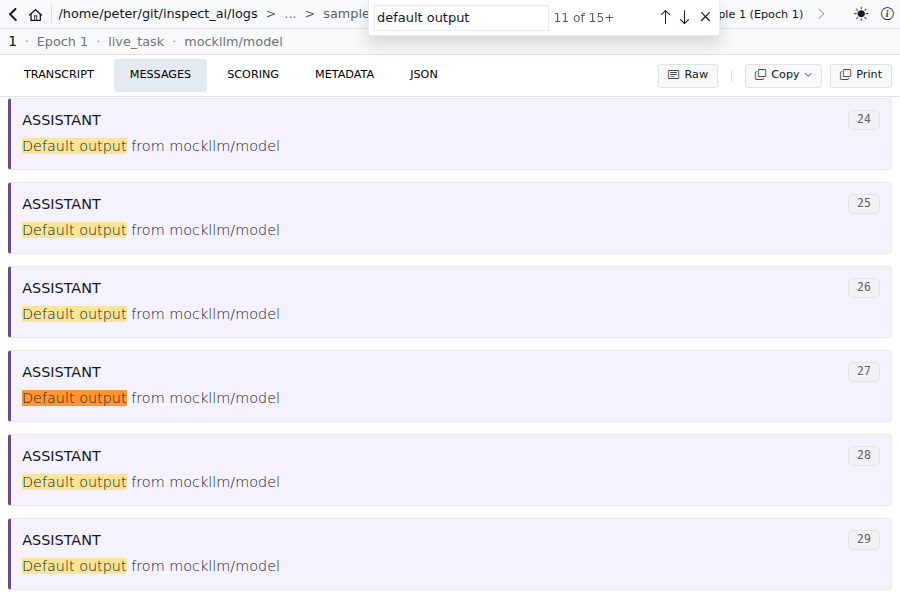

What this branch is now. Cmd+F on the Messages tab asks the view server for the matching rows of the whole sample, page by page; the client keeps every matching row it gets, so "N of M+" becomes "N of M" once the scan reaches the end of a sealed sample, and stepping, wrapping and re-scanning are list arithmetic. Everything else in the viewer keeps its old find.
| id | decision | trade |
|---|
| D1 | Keep every matching row of one forward scan; no window of rows, no backward paging, no bookkeeping for a wrap under a lower-bound count (closes F11–F17). | Shift+Enter from the first hit before the scan has finished waits for the scan, then lands on the last match (≈ 2 s on the million-hit log). One small object per matching row in memory. |
| D2 | The wire contract is one forward page at a time: {sample_id, epoch, text, after?, projection?} → {rows, at_end, complete}; no per-page total, direction or limit. | The client sums the count itself and cannot resume a scan the server started; hawk implements the same three fields and nothing else. |
| D3 | Find scope is per sample (messages:<log>#<id>#<epoch>); leaving the Messages tab and coming back returns you to the same match, scrolled into view. | Switching samples starts from the first hit (before: an anchor like msg-3 could match a row of the other sample). |
| D4 | Only a running sample's row changes count as new data for Find. | A consequence of D2 rather than a choice: a sealed sample's rows change only by paging in what the server already searched, so a re-scan would find the same thing. |
| D5 | A failed page keeps the matches found so far, usable as M+, and shows the failure in the band ("Error" in the count slot, the message on a second line) until the next search or close. | Partial results stay steppable instead of clearing the list or blocking with a retry; the message line cannot widen the band, so the input never moves. |
| D6 | Scout's grep keeps skipping system prompts (as before the shared projection); the tool-error text of a tool message is searchable again. | — |
| D7 | Scroll restore (tab switch within one sample visit) writes the saved offset in one go when the scroller is tall enough, and otherwise targets the saved row by index and applies the in-row offset once the jump settles. | The clamped case moves once inside the correct row; no polling loop of ours. Where restore applies is unchanged from main: snapshots live in memory only (never across a refresh) and are keyed per visit, so only a tab switch within one visit to one sample restores; the metadata tree and outline keep session-long keys. |
| id | do | expect |
|---|
| Q1 | find-qa log, Messages, Cmd+F "kumquat"; Enter; Shift+Enter ×2 | "1 of 8", "2 of 8", "1 of 8", "8 of 8" (local wrap). Also "istanbul" → 1 of 7 (İ folded), "straße" → 1 of 4, "検索" → 1 of 6. |
| Q2 | find-million log, "FINDHIT"; watch the band; press Enter while it climbs | First hit within ~100 ms as "1 of N+", climbing to "1 of 1,000,001" in a few seconds; Enter steps at once (2, 3, …) while M climbs. |
| Q3 | find-million log, "FINDHIT", Shift+Enter immediately (D1) | Band stays on 1 of N+ until the scan finishes, then jumps to the last hit "1,000,001 of 1,000,001". Judge whether the wait is acceptable. |
| Q4 | find-million-chunked log, same term, Shift+Enter after M is exact | The last row is paged in (load-more), then scrolled to and centred. |
| Q5 | Type a 6-letter term one letter at a time; then backspace it letter by letter (DevTools network open) | No layout shift of the band or rows; POSTs only after the 500/300 ms pauses; backspacing re-POSTs nothing (sealed pages cached). |
| Q6 | With a hit active on row ~20, switch to Transcript and back to Messages (D3) | Same term, same "N of M", same row active; no scroll jump. |
| Q7 | A running eval (logs/find-qa-live/live_task.py), Messages, "default output"; Shift+Enter to the last hit; wait for appends | "M+" throughout; the active row stays the same anchor as rows land below it; M grows (S6 shows one run). |
| Q8 | Transcript / JSON / Scoring tabs, Cmd+F | Unchanged legacy find (no Custom Highlight colours, same band). |
| Q9 | Info tab with a long metadata tree: scroll the page 10 px, switch tab, come back (F23) | Page stays where it was (before: jumped to the tree). |
| Q10 | Transcript deep link / j k on a long running transcript (F24) | No jitter while the row lands. |
| Q11 | A .json log, Messages, Cmd+F (F1) | Works (before: 500 on every keystroke). |
| Q12 | Stop the view server while the band is open, type a new term (D5) | Count slot shows "Error", the message appears under the controls, the input does not move; restart the server, type again: error gone. |
| Q14 | logs/cc-features/find-messages-session.eval (this Claude Code session converted with cc2eval, 7.8 MB): Messages, Cmd+F "findStore", step through, wrap | A realistic long transcript with tall tool outputs: hits centred, no jumps while reading, counts stable. |
| Q13 | Messages tab of a long sample, scroll to the last row, switch to Transcript and back (D7) | Same row at the top of the viewport, no drift and no jump afterwards. |
| id | finding | status |
|---|
| F1 | .json logs 500 on Find (chunked-zip probe on a non-zip) | fixed, red-first test |
| F2 | Scout regressions: tool-error text unsearchable; system prompts searched | fixed (projection + scout skip), tests |
| F3 | Cold fold of a huge single row pins the event loop | rows > 100k chars fold in a thread |
| F4 | Live sample: two zip reads + full buffer read per POST | accepted (matches the live tab); noted in design |
| F5 | Tests depended on a real 50 ms clock | budget = ∞ in tests, fake clocks only |
| F6–F9 | Docstring, binary fixture, unused Segment fields, projection required in OpenAPI | fixed; fixture replaced by an in-test conversation |
| F10/F19 | Hawk shim always present → Cmd+F dead against an old server | fixed on hawk branch, test |
| F11–F17 | Store: suffix re-survey published a false exact total; stale backward cursor; end pin lost past 1000 rows; opposite-sign pending at re-window; ungated DOM reports | gone with the store rewrite (no window, no pin, no cursor bookkeeping) |
| F18 | Failed step page wiped the window | D5 |
| F20–F22 | Weak negative-N test; unused variants; wrappers; unbounded countedIds | tests rewritten; fields gone |
| F23 | VirtualList restore regression (embedded lists, padding, intra-row offset) | fixed, 3 red-first tests (D7) |
| F24/F25 | onDone removed (transcript parking loop overlap); scrollToIndex disarms live follow | onDone restored; disarm kept and documented |
| F26 | Reveal gaps: last-row clamp; overscan rows edge-aligned | ResizeObserver retry; rendered rows centre themselves |
| F27 | Registry rebuilt from all rows per mutation; panels rescanned the row | incremental; panels subscribe to the row |
| F28 | Playwright fixture did not model paging | 40-row pages, M+ → M case, panel case (7/7) |
| F32 | An empty-string anchor (message with id "") was read as "no cursor": paging after such a row restarted from the top | fixed (server), plus a client guard that ends a scan whose page does not advance; tests |
| F33 | Leaving the Messages tab cleared the coordinator's term, so a return never relocated; React's dev double-invoke of effects also dropped the in-flight relocation; the reveal was then undone by the list's mount-time reset and, at short viewports, by the virtualizer's size compensation | fixed in four places, each with a failing-first test; Playwright tab-return case at 600 px |
| F34 | Enter on an unchanged term after a failed page did not retry | fixed (refresh), test |
| F35 | On a running sample the source can be ahead of the polled rows; a reveal of a row not yet polled was dropped as an anchor mismatch | fixed (waits for the poll), unit test and the live spec |
| F36 | Attachment-ref rewrite in the chunked reader matched numeric prefixes inside longer strings; document filenames in folded tool results were not searchable | fixed, tests |
| F29–F31 | Guard release on user input; index fallback masking anchor mismatch; unbounded load-more retry; fold guess; css double reserve; @ts-expect-error | fixed |
| id | shows | |
|---|
| S1 | D5: the band before, during and after a failed search. Same left edge of the input in all three; "Error" in the count slot, the message under the controls. |   |
| S2 | D5 in the page: the error line overlays the header, rows untouched, previous highlights cleared. |  |
| S3 | Active match (orange) on "1 of 3", the other occurrences are off-screen rows. |  |
| S4 | D3: "2 of 3" on row 120, then the Transcript tab, then back: same match, scrolled into view (the 600 px viewport is the one where the centring used to be undone). |   |
| S5 | No results. |  |
| S6 | Live sample (real view server, live_task.py ticking): first hit "1 of 11+", Shift+Enter lands on the last hit "11 of 11+", and after more rows land the band reads "11 of 15+" on the same row. |    |
The M+ → M climb on a sealed log and the 1,000,001-hit log are not in the fixture; Q2 and Q3 cover them by hand.